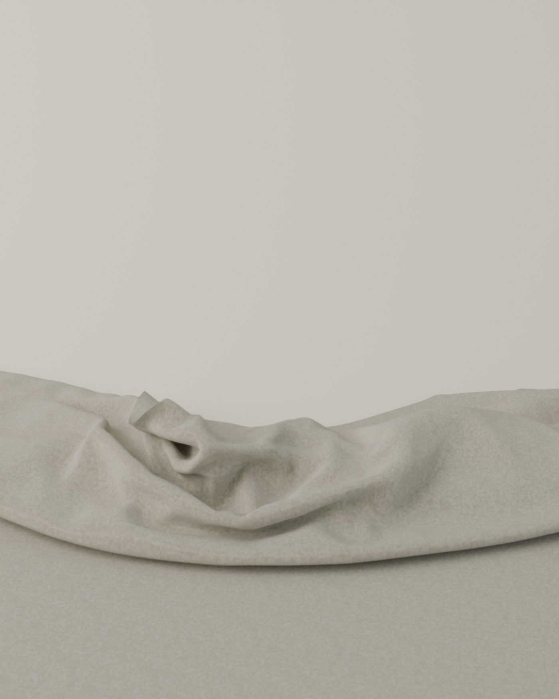
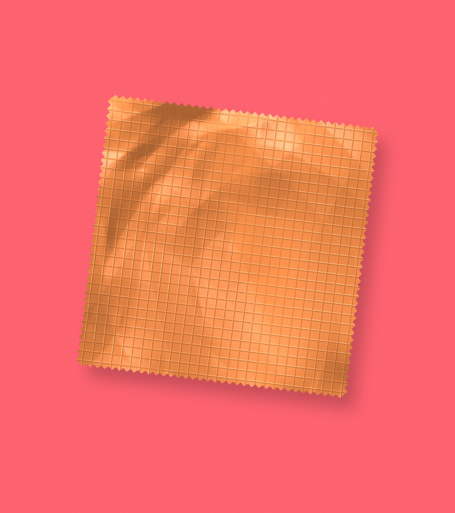

Theoretical research · themes
Conceptual Framework and Creative Direction
Ten themes from my theoretical research. Each one grows into its own page of references, boards and material studies; new themes are added as they form.
- T1
Fabric as sculpture, sculpture as cloth
T1 is variations in material execution, unconventional fabrication and challenging craftsmanship.
- T2
Fashion as conceptual art
Kawakubo, Margiela, authorship, brand as apparatus.
- T3 · selected
Dematerialization vs rematerialization
T3 is the idea of authorship. Regardless of the materiality of the art object, it is what the artist envisions with intention.
- T4
Institutional critique and the apparatus
Institutional critique and the apparatus; links to the apparatus-ownership concept.
- T5
Photography and aura
Benjamin, Stieglitz, Sally Mann, McLuhan.
- T6
Place and nature
This is different from T10.
- T7
Sound, performance, collaboration
Fluxus, Kluver and E.A.T. as a designer-engineer model.
- T8
Asia and postcolonial frame
Japanese designers, kapa.
- T9 · selected
Wear, fragility and the trace of time
T9 focuses on the materialization of wear and tear: the quality of its shape, and how it can represent notions of time and space, like the frequency of light and sound, morphing over time. Wear on leather is the same thing…
- T10 · selected
Restoration, quiet and sensory care
T10 is more human-centric, visceral, and focused on the primitive nature of human perception. Like Lippard said, a slick surface takes longer to read.
T10 Restorer · Visualization
Cloth, form and light
Three Blender studies of one textile idea. Each tests a different thing: distance, soft form, and fall.
 (01) Wall discsThree textile-wrapped discs, soft shadows, no frame. A cabin door-card or acoustic panel idea, read from across the room and up close.
(01) Wall discsThree textile-wrapped discs, soft shadows, no frame. A cabin door-card or acoustic panel idea, read from across the room and up close. (02) Two soft formsA bolster and a dome, matte and sheened by the same light. Tests whether a form with no hard edge still holds attention.
(02) Two soft formsA bolster and a dome, matte and sheened by the same light. Tests whether a form with no hard edge still holds attention.
(03) Cloth on the floorA single cloth let fall by simulation. Tests the quiet of folds with no pattern to compete.
Material study · 3D render
Same cloth.
New signal.
One object, front on, on a single saturated ground. A rendered swatch is how a color or a second material is shown before it is sampled.
Ripstop swatch · 10 × 10 cm · 3D render
See the study behind itRequest access
See the full work.
Case studies, material data and process files are shared on request.
Request access